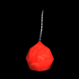

La siguiente lista enumera todos los objetos que se pueden recolectar para ser usados en las aulas:
 Linterna
Linterna
La linterna recargable de Jake está disponible desde el inicio del juego y no necesita ser encontrada para usarla. La linterna puede usarse para iluminar cualquier parte de los cuartos como forma de revelar fuentes de luz y artículos coleccionables. Ya que Jake mantiene la linterna delante de él, no puede crear rayos de luz que él pueda utilizar como puente. La linterna se descarga después de unos segundos de uso pero se puede recargar agitándola por unos 2 segundos.
 Tirachinas
Tirachinas
El tirachinas se usa para romper ventanas u objetos iluminados distantes. A pesar de que el tirachinas está disponible desde el principio del juego, hay que obtener perdigones durante el juego para poder usarlo. Los perdigones solamente se pueden usar en el cuarto en donde se hallaron.
 Caja de perdigones
Caja de perdigones
Cada caja de perdigones que se encuentre añade un perdigón al inventario del jugador.

Petardos
Los petardos se pueden tirar en cualquier lugar del cuarto. Al estallar, crean un haz de luz y destruyen cualquier objeto a su alrededor inmediato. En los niveles posteriores, los objetos rompibles están situados cerca de las ventanas. Para poder romper una ventana, sin romper el objeto, el jugador debe tirar el petardo hacia el lado contrario de la ventana.
 Control remoto del televisor
Control remoto del televisor
El control remoto del televisor hace funcionar todos los televisores del cuarto. Una vez que el jugador tenga este objeto, al presionar el Botón A, podrá encender o apagar los televisores uno a uno. Un televisor destruido no se puede encender.
 Bengala
Bengala
La bengala se puede tirar frente a Jake para crear una pequeña área de luz como puente hacia otra fuente de luz. La bengala se usa oprimiendo el Botón A y moviendo el mando de Wii horizontalmente. Una vez tirada la bengala, no se puede agarrar ni volver a usar. La bengala arde por un momento y después, se desvanece y desaparece.